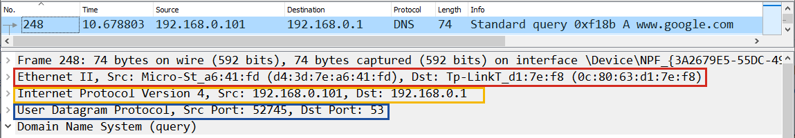

Chữ "tầng" đã xuất hiện ba lần trong hai bài đầu, mà chưa lần nào được giải thích. Tab này nói tầng là gì, bắt đầu từ một request đi ra khỏi laptop.
Câu hỏi của phụ lục
Hồi đi học mình có học bảy tầng OSI, và nhớ mang máng là sau đó nó "giảm thành 3 tầng gì ấy". Nghĩ lại thì hình như cái mình nhớ là mô hình bốn tầng, mô hình mang tên TCP với IP. Còn hai cách đếm đó khớp vào đâu trong những gì đang học thì mình chưa nối được.
Trong khoá học thì chữ tầng đã hiện ra ba lần. Bài 00 nói TCP, TLS và HTTP xếp thành tầng, tầng sau chạy bên trong tầng trước. Truyện TCP Buddies ở Bài 01 có câu "my layer 1". Còn tên đầy đủ của TLS là Transport Layer Security, tức có chữ layer ngay trong tên. Ba chỗ đó dẫn tới ba câu hỏi, và phụ lục đi qua chúng theo thứ tự sau:
- Một tầng là gì, và gói tin trông thế nào khi đi qua các tầng?
- Bảy tầng của OSI và bốn tầng của TCP/IP gồm những tầng nào, và vì sao lại có tới hai cách đếm?
- Khi người ta nói "tầng 4", "tầng 7" thì họ đang chỉ chỗ nào trên bản đồ chín chặng?
Để trả lời, phụ lục dùng lại gói tin và router của Bài 00, port của Bài 01, và lớp vỏ ghi địa chỉ MAC ở phụ lục Mạng và thiết bị mạng.
Mỗi tầng bọc thêm một lớp
Bài 00 nói thứ tự TCP, rồi TLS, rồi HTTP không đảo được, vì bước sau chạy bên trong bước trước. Vậy "bên trong" nghĩa là gì? Nghĩa là mỗi bước nhận phần việc của bước trước, gói nó lại và gắn thêm một phần đầu của riêng mình. Cứ theo một request HTTPS đi ra khỏi laptop là thấy từng lớp được gắn vào.
- Trình duyệt viết request HTTP, giống đoạn
GET / HTTP/1.1ở Hình 8 của Bài 00. - TLS mã hoá cả đoạn request đó thành một khối byte mà người đứng giữa không đọc được, rồi gắn thêm vài byte đầu của TLS.
- TCP cắt dữ liệu thành từng mẩu và gắn vào mỗi mẩu một phần đầu ghi port nơi gửi và port nơi nhận, đúng cái phần đầu mà Ảnh 4 của Bài 01 chụp từ RFC 9293.
- IP gắn thêm một phần đầu ghi địa chỉ IP nơi gửi và nơi nhận. Tới bước này mới có thứ mà Bài 00 gọi là gói tin.
- Card mạng bọc gói tin trong lớp vỏ ghi địa chỉ MAC, rồi đẩy nó lên dây hoặc lên sóng thành tín hiệu.
┌───────────┬───────────┬───────────┬─────────┬─────────────────────┐
│ vỏ MAC │ đầu IP │ đầu TCP │ đầu TLS │ request HTTP │
│ MAC gửi │ IP gửi │ port gửi │ │ GET / HTTP/1.1 │
│ MAC nhận │ IP nhận │ port nhận │ │ Host: example.com │
└───────────┴───────────┴───────────┴─────────┴─────────────────────┘
gắn sau cùng viết đầu tiên
bóc đầu tiên đọc sau cùng
└──── TLS đã mã hoá phần này ────┘Cách xếp lớp này có tên là encapsulation (đóng gói). Trong encapsulation, mỗi bước coi thứ bước trước đưa cho nó là một khối byte. Nó không đọc bên trong khối đó, mà chỉ gắn phần đầu của mình vào rồi giao xuống cho bước kế tiếp. TCP không cần biết mình đang chở request HTTP hay chở gì khác, và IP cũng không cần biết port là gì.
Còn bên nhận thì làm ngược lại. Card mạng của server bóc lớp vỏ MAC. IP đọc phần đầu của nó, thấy địa chỉ nhận đúng là máy mình thì bóc phần đầu đó đi. TCP đọc port để biết giao phần còn lại cho chương trình nào. TLS giải mã, và cuối cùng chương trình nhận kết nối có lại đúng đoạn request mà trình duyệt đã viết.
Tới đây thì nói được tầng là gì. Một tầng (layer) là một phần việc có phần đầu riêng trong gói tin. Nó chỉ dùng dịch vụ của tầng ngay bên dưới và chỉ phục vụ tầng ngay bên trên. Vì mỗi tầng chỉ đọc phần đầu của chính nó, Bài 00 mới nói được rằng sửa hay thay một tầng thì không phải viết lại các tầng khác.
Nhìn một gói tin thật
Mấy lớp ở Hình 1 có nhìn tận mắt được không? Nhìn được, bằng Wireshark, một chương trình bắt lại mọi gói tin đi qua card mạng rồi bóc từng lớp ra cho người đọc. Ảnh 1 là một gói tin thật mà Wireshark bắt được trên máy của một người khác, và gói này chở một câu hỏi DNS.

www.google.com, mở bằng Wireshark. Các dòng xếp từ lớp ngoài vào lớp trong: vỏ Ethernet ghi hai địa chỉ MAC, phần đầu IPv4 ghi hai địa chỉ IP, phần đầu UDP ghi hai port, và dòng cuối là chính câu hỏi DNS. Dòng Frame trên cùng không phải một lớp trong gói, mà là ghi chú của Wireshark về độ dài gói và card mạng đã bắt nó.Ảnh 1 có một chữ chưa gặp là UDP (User Datagram Protocol). UDP đứng cùng chỗ với TCP, cũng ghi port nơi gửi và port nơi nhận, nhưng nó không bắt tay ba bước và cũng không gửi lại gói bị mất. DNS hay chạy trên UDP vì một câu hỏi DNS thường vừa trong một gói tin, có mất thì hỏi lại là xong. Port 53 ở dòng UDP là port quy ước của DNS, giống 443 là port quy ước của HTTPS.
Thứ tự trong Ảnh 1 khớp với Hình 1, chỉ có UDP đứng vào chỗ của TCP và không có lớp TLS. Còn vỏ Ethernet thì chính là lớp vỏ MAC, vì Ethernet là chuẩn nối mạng bằng cáp đã gặp ở phụ lục Mạng và thiết bị mạng.
Hình 1 có năm lớp, nhưng bảng tầng được dạy nhiều nhất thì có bảy. Đó là mô hình OSI, cái bảng hồi đi học mình được học.
Bảy tầng theo văn bản chuẩn
OSI là viết tắt của Open Systems Interconnection, nghĩa là kết nối các hệ thống mở. Hệ thống mở ở đây là những máy theo chuẩn chung, nên máy của hãng này nói chuyện được với máy của hãng khác. Mô hình OSI do ISO, tổ chức tiêu chuẩn quốc tế, công bố lần đầu năm 1984 với số hiệu ISO 7498.
Bản đang hiệu lực là ISO/IEC 7498-1:1994. Cùng văn bản đó cũng được ITU-T, bộ phận làm chuẩn viễn thông của Liên minh Viễn thông Quốc tế, phát hành dưới số hiệu X.200, và bản X.200 tải được miễn phí. Mục 6.1.2 của X.200 kể tên bảy tầng như sau.
The Reference Model contains seven layers:
a) the Application Layer (layer 7);
b) the Presentation Layer (layer 6);
c) the Session Layer (layer 5);
d) the Transport Layer (layer 4);
e) the Network Layer (layer 3);
f) the Data Link Layer (layer 2); and
g) the Physical Layer (layer 1).
Chữ "Reference Model" trong câu đầu, mô hình tham chiếu, nói lên OSI là loại văn bản gì. Mục 1.4 của X.200 ghi rõ mô hình này không nhằm "to serve as an implementation specification", tức nó không phải bản đặc tả để viết phần mềm theo. Nó chỉ chia việc truyền dữ liệu giữa hai máy thành bảy phần, để mỗi nhóm chuyên gia viết chuẩn cho một phần mà không giẫm chân nhau. Giao thức chạy thật cho từng tầng thì được viết sau, trong những văn bản khác.
Bảng 1 nói mỗi tầng lo việc gì, theo phần mục đích của từng tầng trong X.200, và chỉ ra thứ đã gặp trong khoá học nằm ở tầng nào.
| Tầng | Tên | Lo việc gì | Đã gặp |
|---|---|---|---|
| 7 | Application, ứng dụng | Giao thức của chính chương trình: request viết ra sao, câu hỏi DNS viết ra sao | HTTP, DNS |
| 6 | Presentation, trình diễn | Thống nhất cách biểu diễn dữ liệu để hai bên hiểu như nhau, ví dụ cách nén | Chưa gặp giao thức nào chỉ làm việc này |
| 5 | Session, phiên | Mở, giữ trật tự và đóng một phiên trao đổi giữa hai chương trình | Chưa gặp giao thức nào chỉ làm việc này |
| 4 | Transport, giao vận | Chuyển dữ liệu giữa hai chương trình ở hai đầu, đủ và đúng thứ tự | TCP, UDP, port |
| 3 | Network, mạng | Đưa gói tin đi qua nhiều mạng để tới đúng máy | IP, router |
| 2 | Data Link, liên kết dữ liệu | Đưa gói tin tới máy kế bên trong cùng một mạng | Địa chỉ MAC, switch, access point |
| 1 | Physical, vật lý | Đổi bit thành tín hiệu trên cáp đồng, sóng hay cáp quang | Cáp mạng, sóng WiFi, modem |
Router chỉ cần ba tầng dưới
Hai máy ở hai đầu cần đủ bảy tầng, vì một máy viết request còn máy kia đọc nó. Vậy router đứng giữa đường cần mấy tầng? X.200 trả lời câu đó ở mục 6.1.6. Khi đường truyền không nối thẳng hai máy với nhau thì có những hệ thống chỉ làm việc chuyển tiếp, và theo văn bản này thì việc chuyển tiếp đó "provided in the lower layers", tức nằm ở các tầng dưới. Hình 12 của X.200 vẽ đúng cảnh ấy, và Hình 3 dưới đây vẽ lại theo nó, có thêm tên thiết bị.
laptop router server
┌────────────────┐ ┌────────────────┐
│ 7 Application │ ◄── HTTP, hai đầu đọc ───► │ 7 Application │
│ 6 Presentation │ │ 6 Presentation │
│ 5 Session │ │ 5 Session │
│ 4 Transport │ ◄── TCP, hai đầu đọc ────► │ 4 Transport │
├────────────────┤ ┌──────────────┐ ├────────────────┤
│ 3 Network │ ◄► │ 3 Network │ ◄────► │ 3 Network │
│ 2 Data Link │ ◄► │ 2 Data Link │ ◄────► │ 2 Data Link │
│ 1 Physical │ ◄► │ 1 Physical │ ◄────► │ 1 Physical │
└────────────────┘ └──────────────┘ └────────────────┘
└─ mạng nhà bạn ─┘ └──── mạng khác ────┘Hình 3 khớp với phụ lục Mạng và thiết bị mạng. Ở đó switch chỉ đọc lớp vỏ MAC, tức dừng ở tầng 2, còn router mở lớp vỏ ra và đọc địa chỉ IP bên trong, tức đi lên tới tầng 3. Đọc xong địa chỉ thì router bọc gói tin trong một lớp vỏ MAC mới hợp với mạng phía bên kia rồi đẩy đi, nên lớp vỏ MAC chỉ sống được từ máy này tới máy kế bên. Câu RFC 1983 nói router chọn đường bằng "network layer information" giờ cũng rõ nghĩa, vì network layer chính là tầng 3.
Tầng 5 và tầng 6 nằm ở đâu
Bảng 1 có hai dòng mà cột cuối không có gì, vì trên Internet không có giao thức phổ biến nào chỉ làm đúng việc của tầng Session hay tầng Presentation. Chỗ này cũng làm TLS khó xếp. Tên của nó có chữ Transport Layer, nhưng nó chạy bên trong kết nối TCP và bọc request HTTP bên trong, nên tài liệu mỗi nơi xếp TLS một kiểu, nơi thì tầng 5, nơi thì tầng 6. Theo mình thì cứ nói TLS nằm giữa tầng 4 và tầng 7 là dễ dùng nhất, vì câu đó nói đúng điều Hình 1 đã cho thấy.
OSI là bảng chia việc viết trên giấy. Internet đang chạy thì theo một bảng khác, ít tầng hơn, và đó chính là mô hình bốn tầng mà mình nhớ ra.
Bốn tầng trong RFC 1122
Mô hình bốn tầng ấy được ghi ở đâu? Nó được ghi trong RFC 1122, văn bản năm 1989 quy định một máy nối Internet phải làm được những gì. Mục 1.1.3 của RFC này nói một máy muốn nói chuyện qua Internet thì phải cài một bộ giao thức xếp thành tầng, mỗi tầng ít nhất một giao thức, rồi kể tên bốn tầng đó.
The protocol layers used in the Internet architecture are as follows: […] Application Layer […] Transport Layer
[…] Internet Layer […] Link Layer
The application layer of the Internet suite essentially combines the functions of the top two layers --
Presentation and Application -- of the OSI reference model.
Bộ giao thức này mang tên TCP/IP, lấy theo hai giao thức chính của nó, TCP ở tầng Transport và IP ở tầng Internet. Hai tầng giữa khớp gần như một một với OSI, nên tầng Transport vẫn là tầng 4 và tầng Internet là tầng 3. Hai đầu thì khác. Ở dưới, tầng Link gộp tầng 1 và tầng 2 của OSI, vì RFC 1122 chỉ đòi máy nói được với mạng nó nối thẳng vào, còn nói bằng cáp hay bằng sóng thì để chuẩn của từng loại mạng lo. Ở trên, tầng Application gộp các tầng trên của OSI, và phần lớn tài liệu vẽ nó trùm cả ba tầng 5, 6, 7 như Hình 5.
OSI, 7 tầng TCP/IP, 4 tầng đã gặp trong khoá
┌───────────────────┐ ┌────────────────┐
│ 7 Application │ │ │ HTTP, DNS
│ 6 Presentation │ │ Application │
│ 5 Session │ │ │
├───────────────────┤ ├────────────────┤
│ 4 Transport │ │ Transport │ TCP, UDP, port
├───────────────────┤ ├────────────────┤
│ 3 Network │ │ Internet │ IP, router
├───────────────────┤ ├────────────────┤
│ 2 Data Link │ │ Link │ MAC, switch
│ 1 Physical │ │ │ cáp, sóng, modem
└───────────────────┘ └────────────────┘Vậy sách này bảy tầng, sách kia bốn tầng thì sách nào sai? Không sách nào sai cả. Có giáo trình còn dùng năm tầng, tức tách tầng Link ra làm hai như OSI. Mọi cách đếm cùng tả một chồng việc, từ tín hiệu trên dây lên tới giao thức của ứng dụng, và chỉ khác nhau ở chỗ gộp hay tách. Cái cần nhớ là thứ tự của chồng việc đó.
Internet chạy các giao thức của TCP/IP, chia bốn tầng. Còn khi người ta gọi số tầng, như "tầng 4", "tầng 7", thì con số đó là số của OSI.
Giao thức thì theo TCP/IP, mà số tầng lại gọi theo OSI. Hai thứ lệch nhau như vậy vì hai bảng ra đời ở hai nơi, cùng một khoảng thời gian, và từng cạnh tranh nhau để thành chuẩn chung.
Hai bảng, hai nơi làm ra
TCP/IP ra đời trước, từ một dự án nghiên cứu. Tháng 5 năm 1974, Vint Cerf và Bob Kahn công bố bài A Protocol for Packet Network Intercommunication trên tạp chí IEEE Transactions on Communications. Bài đó mô tả cách cho nhiều mạng gói tin khác nhau nói chuyện được với nhau, và giao thức trong bài về sau được tách làm hai, TCP và IP. Ngày 1/1/1983, mạng nghiên cứu ARPANET chuyển hẳn sang TCP/IP, như phụ lục Lịch sử địa chỉ IP đã kể.
OSI thì đi đường khác. Theo bài OSI: The Internet That Wasn't của nhà sử học Andrew L. Russell đăng trên IEEE Spectrum năm 2013, ISO lập một uỷ ban về OSI năm 1977 do Charles Bachman làm chủ tịch, họp toàn thể lần đầu đầu năm 1978, và ra mô hình bảy tầng năm 1984. Đây là một chuẩn do uỷ ban của nhiều nước, nhiều hãng cùng soạn. Mục tiêu của nó là máy của mọi hãng nối được với nhau, chứ không phải nối mạng của riêng một dự án.
1974 Cerf và Kahn công bố giao thức nối nhiều mạng TCP/IP
1977 ISO lập uỷ ban OSI OSI
1983 ARPANET chuyển hẳn sang TCP/IP, ngày 1/1 TCP/IP
1984 ISO công bố ISO 7498, mô hình bảy tầng OSI
1988 Bộ Thương mại Mỹ yêu cầu cơ quan chính phủ mua
sản phẩm theo OSI, áp dụng sau tháng 8/1990 OSI
1989 RFC 1122 ghi bốn tầng của Internet TCP/IP
1992 kỹ sư Internet bác đề xuất lấy giao thức của ISO
thay cho IPv4 TCP/IP
1994 bản sửa ISO/IEC 7498-1, cùng văn bản ITU-T X.200 OSITCP/IP thắng vì nó chạy trước
Năm 1988 chính phủ Mỹ còn chọn OSI, vậy sao về sau Internet lại chạy TCP/IP? Bài của Russell đưa ra hai lý do chính. Uỷ ban OSI mở cửa cho mọi bên cùng bàn, nên chuẩn ra rất chậm và chứa nhiều phương án để chiều tất cả. Văn bản chuẩn OSI thì phải mua bản giấy từ ISO, trong khi ai cũng tự cài được TCP/IP mà không mất tiền. Trong lúc OSI còn đang soạn thì TCP/IP đã chạy, và tới giữa thập niên 1990 Internet đã thành chuẩn thực tế cho mạng toàn cầu. Đây là cách kể của một nhà sử học, mình chưa đọc tài liệu gốc của uỷ ban OSI để tự kiểm.
Dấu vết còn lại: cách đánh số
Giao thức của OSI gần như không còn thấy trên Internet, nhưng cách đánh số tầng của nó thì ở lại. Vì sao người ta vẫn gọi "tầng 2", "tầng 7" theo OSI mà không gọi theo TCP/IP? Theo mình là vì bảy tầng chia nhỏ hơn bốn tầng. TCP/IP gộp sợi dây và địa chỉ MAC vào chung tầng Link, nên muốn nói riêng về sợi dây thì phải mượn số của OSI. Chữ "my layer 1" trong truyện TCP Buddies chính là số của OSI, vì TCP/IP không có tầng 1 nào riêng.
Có đủ hai bảng rồi thì quay về câu hỏi cuối: người ta nói "tầng 4", "tầng 7" là đang chỉ chỗ nào trên bản đồ chín chặng?
Mỗi chặng đọc tới tầng nào
Một chặng nằm ở tầng nào thì nhìn vào thứ nó đọc là biết. Chặng nào chỉ đọc địa chỉ IP thì dừng ở tầng 3, chặng nào đọc port thì lên tới tầng 4, còn chặng nào đọc được path hay header của request thì đã lên tới tầng 7. Bảng 2 xếp chín chặng của Bài 00 theo cách đó, và thêm một dòng cho các router trên Internet nằm giữa hai đầu.
| Chặng | Đọc tới tầng | Đọc gì |
|---|---|---|
| Trình duyệt | 7 | URL, rồi viết ra request HTTP |
| DNS | 7 | Câu hỏi và câu trả lời DNS, thường chạy trên UDP port 53 |
| Mở kết nối TCP | 4 | Port, ba gói của bắt tay ba bước |
| Bắt tay TLS | giữa 4 và 7 | Chứng chỉ, rồi mã hoá mọi thứ ở bên trên |
| Gửi request HTTP | 7 | Phương thức, path, các header |
| Các router trên Internet | 3 | Địa chỉ IP nơi nhận |
| Firewall | 3 và 4 | Địa chỉ nguồn và đích, port, giao thức |
| Nginx | 7 | Header Host, path |
| Ứng dụng Spring Boot | 7 | Cả request; phía trên tầng 7 là code bạn viết |
| PostgreSQL | 7 | Giao thức riêng của PostgreSQL, chạy trên TCP port 5432 |
Dòng firewall đáng nhìn kỹ hơn. Theo định nghĩa ở Bài 01, mỗi luật của
firewall xét nguồn, đích, port và giao thức, tức dừng ở tầng 3 và tầng 4. Vì vậy firewall chặn được "mọi kết nối vào
port 8080", nhưng không chặn được riêng request tới /admin, vì path nằm ở tầng 7 mà firewall không đọc
tới. Nginx thì khác, nó đọc tới tầng 7, nên mới chọn được website theo header Host như Bài 00 đã kể.
Lỗi tầng 4 và lỗi tầng 7
Số tầng còn giúp chia lỗi làm hai nhóm. Nếu bắt tay ba bước không xong, người gọi thấy refused hay
timeout, thì lỗi nằm ở tầng 4 trở xuống, đúng phạm vi ba điều kiện của Bài 01. Nếu bắt tay xong rồi mà
trang trả về vẫn sai hay báo lỗi thì tầng 4 đã thông, và lỗi nằm ở tầng 7 hoặc nằm trong code. Vì thế khi ai đó nói
"tầng 4 thông rồi" thì ý họ là kết nối TCP đã mở được, việc còn lại là xem request và câu trả lời.
Thiết bị gọi tên theo tầng
Người ta cũng hay gọi một thiết bị hay một chương trình theo tầng cao nhất mà nó đọc. Switch đọc tới lớp vỏ MAC nên được gọi là thiết bị tầng 2, còn router là thiết bị tầng 3. Cách gọi này gặp nhiều nhất với load balancer (bộ cân bằng tải). Khi một server không chịu nổi số người dùng, người ta chạy cùng một app trên nhiều server rồi đặt phía trước chúng một load balancer, là chương trình chia các kết nối đi vào cho những server đó.
AWS, dịch vụ cho thuê server của Amazon, có hai loại load balancer, và tài liệu chính thức gọi tên chúng đúng theo số tầng của OSI.
A Network Load Balancer functions at the fourth layer of the Open Systems Interconnection (OSI) model.
An Application Load Balancer functions at the application layer, the seventh layer of the Open Systems
Interconnection (OSI) model. […] You can configure listener rules to route requests to different target groups based
on the content of the application traffic.
Hai loại đó khác nhau ở đúng chỗ Bảng 2 đã chỉ ra. Loại tầng 4 chỉ thấy địa chỉ và port, nên nó chỉ chia được theo
từng kết nối: kết nối này sang server A, kết nối kia sang server B. Loại tầng 7 đọc được header Host và
path, nên nó chia được theo nội dung, ví dụ request tới /api sang một nhóm server còn request tới
/ sang nhóm khác. Đổi lại, loại tầng 7 phải gỡ được mã hoá TLS thì mới đọc được request, còn loại tầng 4
thì không cần.
Tầng 4 là chỗ của TCP và port, tầng 7 là chỗ của HTTP. Thứ gì chỉ đọc tới tầng 4 thì biết kết nối đi đâu, nhưng không biết request bên trong muốn gì.
Trước khi quay về Bài 01, có năm chỗ dễ nghĩ sai về tầng nên gom lại một lần.
Những chỗ dễ nghĩ sai
| Dễ nghĩ là | Đúng là | Xem lại |
|---|---|---|
| Internet chạy theo mô hình OSI | Internet chạy các giao thức của TCP/IP. Từ OSI, thứ còn dùng hằng ngày là cách đánh số tầng | Dấu vết còn lại |
| Giao thức nào cũng nằm gọn trong đúng một tầng | TLS không khớp ô nào của OSI. Mô hình dùng để gọi tên và chia việc, không phải luật mọi giao thức phải theo | Tầng 5 và tầng 6 |
| Router đọc cả request HTTP đi qua nó | Router chỉ bóc tới tầng 3, đọc địa chỉ IP rồi chuyển đi. Với HTTPS thì phần HTTP đã mã hoá, router có muốn cũng không đọc được | Router chỉ cần ba tầng dưới |
| Sách bảy tầng và sách bốn tầng thì một sách sai | Cả hai tả cùng một chồng việc, chỉ khác chỗ gộp hay tách | Bốn tầng trong RFC 1122 |
| Firewall trên laptop chặn được request theo path | Firewall xét địa chỉ, port và giao thức, tức tầng 3 và tầng 4. Phân biệt theo path là việc của thứ đọc tới tầng 7 | Mỗi chặng đọc tới tầng nào |
Nối về Bài 01
Vậy Bài 01 nằm ở tầng nào? Nằm trọn ở tầng 3 và tầng 4. Gọi đúng địa chỉ là chuyện của tầng 3, listen một port là
chuyện của tầng 4, còn firewall xét cả hai. Hai triệu chứng refused và timeout là hai kiểu
bắt tay ba bước không xong, tức hai kiểu hỏng ở tầng 4.
Còn câu hỏi ở cuối Bài 01 thì đã sang tầng 7. Ở đó kết nối đã mở, tức tầng 4 đã thông, mà trang vẫn báo lỗi mang một con số. Theo cách chia ở tab trước thì lỗi ấy nằm ở tầng 7 hoặc trong code, tức ở những chặng đọc được request.
Nguồn đọc thêm
Gồm văn bản chuẩn gốc, tài liệu chính thức và một bài lịch sử. Dùng để tra cứu, không cần đọc hết.
- ITU-T X.200 (07/1994), Open Systems Interconnection: Basic Reference Model, cùng văn bản với ISO/IEC 7498-1:1994. Bảy tầng ở mục 6, mục đích từng tầng ở mục 7. Tải miễn phí. itu.int/rec/T-REC-X.200-199407-I
- RFC 1122, Requirements for Internet Hosts: Communication Layers (1989). Bốn tầng ở mục 1.1.3. rfc-editor.org/rfc/rfc1122
- V. Cerf, R. Kahn, A Protocol for Packet Network Intercommunication, IEEE Transactions on Communications, tháng 5 năm 1974. ieeexplore.ieee.org/document/1092259
- Andrew L. Russell, OSI: The Internet That Wasn't, IEEE Spectrum, 2013. spectrum.ieee.org/osi-the-internet-that-wasnt
- AWS, trang giới thiệu Network Load Balancer và Application Load Balancer. docs.aws.amazon.com/…/network/introduction · …/application/introduction
- Wireshark User's Guide, tài liệu chính thức của Wireshark. wireshark.org/docs/wsug_html_chunked
Nguồn ảnh
Ảnh lấy từ Wikimedia Commons, dùng theo giấy phép ghi ở từng dòng. Ảnh 1 đã được cắt lấy phần trên và vẽ thêm ba khung màu, bản đã chỉnh được chia sẻ lại theo đúng giấy phép của ảnh gốc. Ảnh 2 đã được chuyển sang đen trắng.
- Ảnh 1Wireshark Network Analyzer Screen, Laurachappell, Wikimedia Commons, CC BY-SA 4.0.
- Ảnh 2Cerf và Kahn nhận Huân chương Tự do, 2005, Paul Morse, Nhà Trắng, Wikimedia Commons, phạm vi công cộng.